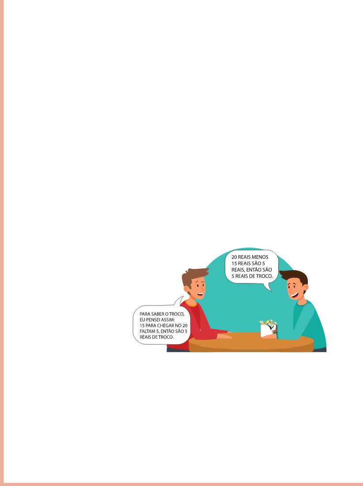

ADIÇÃO E SUBTRAÇÃO
PENSE NESTAS SITUAÇÕES:
- MÁRCIO GASTOU 12 REAIS NA PADARIA E 25 REAIS NA FARMÁCIA. QUANTO ELE GASTOU NO TOTAL?
- SIMONE JÁ TINHA FEITO 5 HORAS EXTRAS E HOJE FEZ MAIS 2. QUANTAS HORAS EXTRAS ELA JÁ ACUMULOU?
PARA SABER QUANTO MÁRCIO GASTOU, JUNTAMOS OS VALORES GASTOS NA PADARIA E NA FARMÁCIA.
PARA SABER O TOTAL DE HORAS EXTRAS DE SIMONE, ACRESCENTAMOS 2 HORAS ÀS 5 HORAS QUE ELA JÁ TINHA.
RELEMBRE SITUAÇÕES COTIDIANAS EM QUE JUNTAMOS OU ACRESCENTAMOS QUANTIDADES.
IMAGINE ESSAS OUTRAS SITUAÇÕES E RESPONDA ÀS QUESTÕES A SEGUIR.
QUAL DAS ESTRATÉGIAS DISCUTIDAS AO LADO VOCÊ USARIA PARA CALCULAR O TROCO?

BOALER, Jo. O que a Matemática tem a ver com isso?: como professores e pais podem transformar a aprendizagem da Matemática e inspirar sucesso.
Porto Alegre: Penso, 2019.
O livro tem o intuito de proporcionar a pais e a professores maneiras para trabalhar com a Matemática, fortalecendo a ideia de que não se trata de um componente curricular difícil.
Aconselhando pais e atentando às experiências dos estudantes, esse livro apresenta maneiras concretas do trabalho com esse componente curricular dando ênfase a estratégias essenciais para os envolvidos no processo de ensino e aprendizagem.